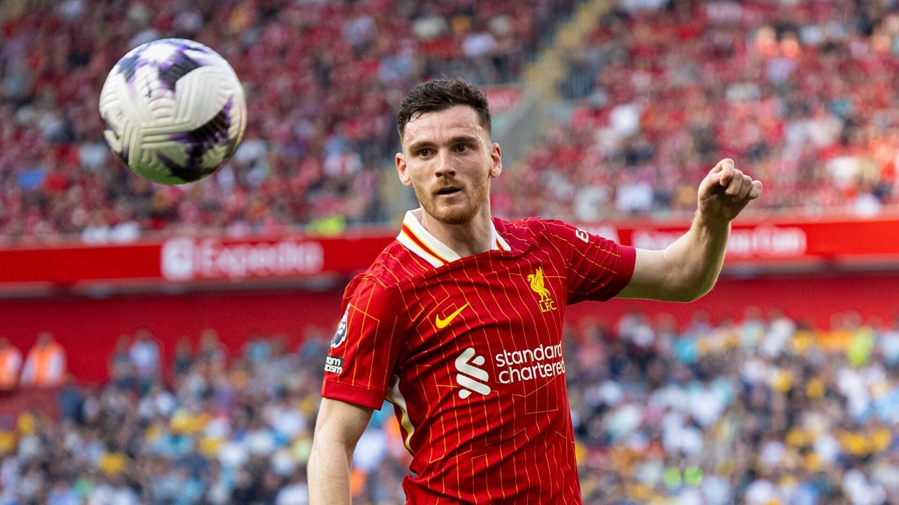
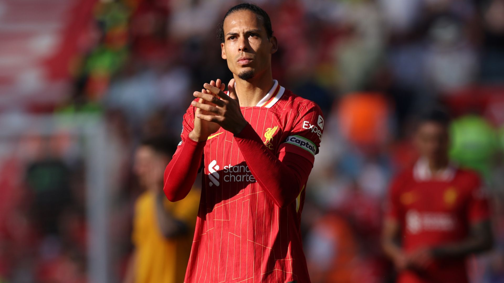

โค้ชของทีม Liverpool คนปัจจุบัน
Arne Slot
อาเรินด์ มาร์ไตน์ "อาร์เนอ" สล็อต (Arend Martijn "Arne" Slot; เกิด 17 กันยายน ค.ศ. 1978) เป็นผู้จัดการทีมและอดีตนักฟุตบอลชาวดัตช์ ปัจจุบันเป็นหัวหน้าผู้ฝึกสอนของลิเวอร์พูล สโมสรในพรีเมียร์ลีก6
Best Liverpool XI 11 Players ของ Liverpool ที่ดี ณ ปัจจุบัน
Goalkeeper ของ Liverpool คนปัจจุบัน
Alisson Becker
อาลีซง รังเซส แบเกร์ (โปรตุเกส: Alisson Ramsés Becker; เกิด 2 ตุลาคม ค.ศ. 1992) เป็นนักฟุตบอลอาชีพชาวบราซิล ปัจจุบันเล่นในตำแหน่งผู้รักษาประตูให้กับสโมสรฟุตบอลลิเวอร์พูลและทีมชาติบราซิล เขาได้รับการยกย่องว่าเป็นหนึ่งในผู้รักษาประตูที่ดีที่สุดในโลก ด้วยสถิติการเก็บคลีนชีต การจ่ายบอล การแอสซิสต์ การเข้าสกัดบอล การพุ่งตัวเข้าหาบอล และยังเป็นผู้รักษาประตูคนแรกในประวัติศาสตร์สโมสรฟุตบอลลิเวอร์พูลที่สามารถทำประตูได้
Left Back ของทีม Liverpool คนปัจจุบัน
Andrew Robertsonr
แอนดรูว์ เฮนรี รอเบิร์ตสัน (Andrew Henry Robertson; เกิด 11 มีนาคม ค.ศ. 1994) เป็นนักฟุตบอลชาวสกอตแลนด์ ปัจจุบันเล่นในตำแหน่งแบ็กซ้ายในพรีเมียร์ลีก ให้กับลิเวอร์พูลและฟุตบอลทีมชาติสกอตแลนด์
Center back ฝั่งซ้ายของทีม Liverpool คนปัจจุบัน
Virgil van Dijk ( C )
เฟอร์จิล ฟัน ไดก์ (Virgil van dijk) เกิด 8 กรกฎาคม ค.ศ. 1991) เป็นนักฟุตบอลชาวดัตช์ปัจจุบันเล่นให้กับสโมสรฟุตบอลลิเวอร์พูลในพรีเมียร์ลีกในตำแหน่งกองหลังและฟุตบอลทีมชาติเนเธอร์แลนด์ ในปัจจุบันเขาได้เป็นกัปตันทีมสโมสรฟุตบอลลิเวอร์พูลและฟุตบอลทีมชาติเนเธอร์แลนด์ และได้เข้าร่วมฟุตบอลทีมชาติเนเธอร์แลนด์ ครั้งแรกใน ค.ศ. 2014 ความสามารถของฟัน ไดก์ได้รับการยอมรับอย่างกว้างขวางและได้รับการยกย่องให้เป็นกองหลังที่ดีที่สุดคนหนึ่งของโลก ฟัน ไดก์เป็นที่รู้จักจากความแข็งแกร่ง มีความเป็นผู้นำ และทักษะกลางอากาศ เขาเป็นกองหลังคนเดียวที่ชนะรางวัลนักฟุตบอลชายยอดเยี่ยมแห่งปีของยูฟ่า และได้อันดับรองชนะเลิศในสาขาผู้เล่นชายยอดเยี่ยมของฟีฟ่าของบาลงดอร์
Center back ฝั่งขวาของทีม Liverpool คนปัจจุบัน
Ibrahima Konaté
อีบราอีมา โกนาเต (Ibrahima Konaté; เกิด 25 พฤษภาคม ค.ศ. 1999) เป็นนักฟุตบอลชาวฝรั่งเศส ปัจจุบันเล่นในตำแหน่งเซ็นเตอร์แบ็กให้แก่ลิเวอร์พูลในพรีเมียร์ลีก และฟุตบอลทีมชาติฝรั่งเศส
Right Back ของทีม Liverpool คนปัจจุบัน
Trent Alexander-Arnold
ประวัติ Trent Alexander-Arnold ( เทรนต์ อเล็กซานเดอร์-อาร์โนลด์ ) เกิดวันที่ 7 ตุลาคม ค.ศ. 1998 นักฟุตบอลชาวอังกฤษ ส่วนสูง 1.75 เมตร หรือ 5 ฟุต 8.9 นิ้ว ตำแหน่ง กองกลาง แบ็กขวา ปีก ปัจจุบันเล่นให้กับสทีม ลิเวอร์พูล สโมสรชื่อดังในพรีเมียร์ลีก อังกฤษ สวมเสื้อหมายเลข 66 เทรนต์ อเล็กซานเดอร์-อาร์โนลด์ เข้าร่วมเล่นฟุตบอลครั้งแรกในระดับสโมสรเยาวชนลิเวอร์พูล ในปี 2004-1016 ซึ่งอยู่ฝึกนานเป็นเวลา 12 ปีที่อยู่ร่วมเล่นในระดับเยาวชน จากนั้นได้ก้าวขึ้นมาเล่นในระดับสโมสรอาชีพกับลิเวอร์พูล เมื่อปี 2016 โดยลงเล่นกับทีมไปแล้วมากกว่า 26 ครั้ง และเป็นนักเตะที่มีอายุน้อยของทีม สามารถสร้างสรรผลงานของการทำประตูในเกมให้กับเพื่อนร่วมทีมและมีความสามารถในการเปิดลูกแม่นยำ และเป็นนักเตะที่สามารถทำประตูได้ จึงเป็นอีกหนึ่งนักเตะที่เป็นตัวขับเคลื่อนของทีม จากความสามารถทำให้เขานั้นเป็นนักเตะอีกหนึ่งคนที่ได้รับความไว้ใจ
Defensive Midfielder ของทีม Liverpool คนปัจจุบัน
Ryan Gravenberch
ไรอัน ฌีโร คราเฟินแบร์ค (Ryan Jiro Gravenberch; เกิด 16 พฤษภาคม ค.ศ. 2002) เป็นนักฟุตบอลชาวดัตช์ ปัจจุบันเล่นในตำแหน่งกองกลางให้แก่ลิเวอร์พูล สโมสรในพรีเมียร์ลีก และทีมชาติเนเธอร์แลนด์
Center Midfielder ของทีม Liverpool คนปัจจุบัน

Alexis Mac Allister
อาเลกซิส มัก อาลิสเตร์ ( Alexis Mac Allister; เกิด 24 ธันวาคม ค.ศ. 1998) เป็นนักฟุตบอลชาวอาร์เจนตินา ปัจจุบันเล่นในตำแหน่งกองกลางให้แก่ลิเวอร์พูล สโมสรในพรีเมียร์ลีก และทีมชาติอาร์เจนตินา มัก อาลิสเตร์ เกิดในครอบครัวนักฟุตบอล เริ่มต้นอาชีพกับอาร์เฆนติโนสยูนิออร์สเมื่อปี 2016 โดยคว้าแชมป์ดิวิชันสองของอาร์เจนตินาในฤดูกาลเปิดตัว จากนั้นเขาย้ายไปร่วมทีมไบรตันแอนด์โฮฟอัลเบียนเมื่อปี 2019 แต่ปล่อยยืมกลับให้ยูนิออร์สจนจบฤดูกาล ในปีที่สองกับไบรตัน มัก อาลิสเตร์ ถูกปล่อยยืมไปยังสโมสรอาร์เจนตินาอีกครั้งกับโบกายูนิออร์ส และคว้าแชมป์ปริเมราดิบิซิออน ฤดูกาล 2019–20 เมื่อกลับมาจากการปล่อยยืมในฤดูกาลถัดมา มัก อาลิสเตร์ ประสบความสำเร็จกับไบรตัน และกลายเป็นผู้เล่นคนสำคัญของทีม
Attacking Midfielder ของทีม Liverpool คนปัจจุบัน
Dominik Szoboszlai
โดมินิก โซโบสลอยี ( Dominik Szoboszlai ; เกิด 25 ตุลาคม ค.ศ. 2000) เป็นนักฟุตบอลอาชีพชาวฮังการีซึ่งเล่นตำแหน่งกองกลางให้แก่ลิเวอร์พูล และเป็นกัปตันทีมของทีมชาติฮังการีและเขายังสามารถเล่นในตำแหน่งกองกลางตัวรุกและปีกได้อีกด้วย โซโบสลอยีประเดิมสนามในนามทีมชุดใหญ่ใน ค.ศ. 2017 กับสโมสรฟุตบอลลีเฟอริง ทีมสำรองของเร็ดบุลซัลทซ์บวร์ค ในเดือนมกราคม ค.ศ. 2018 โซโบสลอยีเปิดตัวกับสโมสรแม่โดยกลายเป็นผู้เล่นตัวจริงในฤดูกาล 2018–19 สามฤดูกาลต่อมา เขาช่วยให้สโมสรคว้าแชมป์ลีก 3 สมัยติดต่อกันและบอลถ้วยในประเทศ 2 รายการ ในเดือนมกราคม ค.ศ. 2021 โซโบสลอยีย้ายไปเยอรมนีโดยอยู่กับแอร์เบ ไลพ์ซิช ซึ่งเป็นสโมสรพันธมิตรกับเร็ดบุลซัลทซ์บวร์ค ด้วยค่าตัว 20 ล้านยูโร ทำให้เขากลายเป็นนักฟุตบอลชาวฮังการีที่มีค่าตัวแพงที่สุดตลอดกาล โดยตลอดระยะเวลาสามฤดูกาล เขาชนะเลิศรายการเดเอ็ฟเบ-โพคาลสองครั้ง ก่อนจะย้ายไปร่วมทีมลิเวอร์พูลในเดือนกรกฎาคม ค.ศ. 2023 ด้วยค่าตัว 70 ล้านยูโร ทำให้เขากลายเป็นผู้เล่นที่มีค่าตัวมากที่สุดเป็นอันดับ 4 ของสโมสร โซโบสลอยีเป็นตัวแทนของทีมชาติฮังการีทั้งในระดับเยาวชนและทีมชาติชุดใหญ่ เขาเปิดตัวในนามทีมชาติชุดใหญ่ในรอบคัดเลือกยูโร 2020 ช่วยให้ประเทศของเขาผ่านเข้ารอบสุดท้ายด้วยการทำประตูในนาทีสุดท้ายในการแข่งขันรอบเพลย์ออฟพบกับไอซ์แลนด์
Left wing ของทีม Liverpool คนปัจจุบัน
Cody Gakpo
โกดี มาแต็ส คักโป (Cody Mathès Gakpo; เกิดวันที่ 7 พฤษภาคม ค.ศ. 1999) เป็นนักฟุตบอลอาชีพชาวดัตช์ ปัจจุบันเล่นในตำแหน่งกองหน้าให้แก่ลิเวอร์พูลในพรีเมียร์ลีก และทีมชาติเนเธอร์แลนด์ แต่เขายังสามารถเล่นในตำแหน่งปีกซ้ายได้อีกด้วย ในฐานะผลผลิตจากสถาบันเยาวชนของเปเอสเฟ คักโปเปิดตัวกับทีมชุดใหญ่ของสโมสรในเดือนกุมภาพันธ์ ค.ศ. 2018 ต่อมาในฤดูกาล 2021–22 เขาได้รับรางวัลนักฟุตบอลดัตช์ยอดเยี่ยมแห่งปีหลังจากที่ยิงได้ 21 ประตูจาก 47 เกมการแข่งขันรวมทุกรายการ คักโปเป็นตัวแทนระดับเยาวชนของทีมชาติเนเธอร์แลนด์ตั้งแต่รุ่นอายุไม่เกิน 18 ปี จนถึงรุ่นอายุไม่เกิน 21 ปี เขาเปิดตัวกับทีมชาติชุดใหญ่ในการแข่งขันฟุตบอลชิงแชมป์แห่งชาติยุโรป 2020 เมื่อเดือนมิถุนายน ค.ศ. 2021
Striker ของทีม Liverpool คนปัจจุบัน

Darwin Núñez
ดาร์วิน กาบริเอล นุญเญซ ริเบย์โร ( Darwin Gabriel Núñez Ribeiro; เกิด 24 มิถุนายน ค.ศ. 1999) เป็นนักฟุตบอลชาวอุรุกวัย ปัจจุบันเล่นในตำแหน่งกองหน้าให้แก่ลิเวอร์พูล และทีมชาติอุรุกวัย นุญเญซเป็นนักฟุตบอลทีมเยาวชนของเปญญาโรล ก่อนที่จะเลื่อนขึ้นมาอยู่ในทีมชุดแรกเมื่อปี 2017 ในเดือนสิงหาคม 2019 เขาได้เซ็นสัญญากับอัลเมริอา สโมสรในเซกุนดาดิบิซิออนด้วยค่าตัวสถิติสโมสร ต่อมา ไบฟีกาเซ็นสัญญากับเขาในปี 2020 ด้วยค่าตัวสถิติสโมสร 24 ล้านยูโร ซึ่งเป็นมูลค่าการเซ็นสัญญาที่สูงที่สุดในประวัติศาสตร์ฟุตบอลโปรตุเกส ในฤดูกาลที่สองเขาได้รับรางวัล Bola de Prata จากการเป็นผู้ทำประตูสูงสุดในปรีไมราลีกา ด้วยจำนวน 26 ประตู จาก 28 เกม จนนุญเญซได้รับความสนใจจากหลายสโมสรในยุโรป กลายเป็นลิเวอร์พูลที่เซ็นสัญญากับเขาในเดือนมิถุนายน 2022 ด้วยค่าตัว 75 ล้านยูโร (64 ล้านปอนด์) หลังจากเป็นตัวแทนของอุรุกวัยในระดับเยาวชนหลายรุ่นอายุ นุญเญซติดทีมชาติชุดใหญ่เป็นครั้งแรกในเดือนตุลาคม 2019 ซึ่งเขาประเดิมสนามแรกด้วยการทำประตูได้ในเกมที่กับเปรู
Right wing ของทีม Liverpool คนปัจจุบัน
Mohammed Salah ( K )
มุฮัมมัด เศาะลาห์ ฮามิด มะห์รูส ฆอลี (Mohammed Salah Ghaly; เกิดวันที่ 15 มิถุนายน ค.ศ. 1992) เป็นนักฟุตบอลชาวอียิปต์ ปัจจุบันเล่นในตำแหน่งกองหน้าและปีกขวาให้แก่ลิเวอร์พูลและทีมชาติอียิปต์ เขาได้รับการยกย่องให้เป็นหนึ่งในผู้เล่นที่ดีที่สุดในโลก ด้วยความสามารถในการจบสกอร์ การเลี้ยงบอล และความเร็ว salah เริ่มต้นอาชีพกับสโมสร Al Mokawloon ในอียิปต์ ก่อนที่จะย้ายไปบาเซิลในสวิสเซอร์แลนด์แบบไม่เปิดเผยค่าตัว ผลงานอันโดดเด่นในการเล่นที่สวิตเซอร์แลนด์ ทำให้เขาได้รับความสนใจจากเชลซีในพรีเมียร์ลีกและได้ย้ายไปที่นั่นในปี 2014 ด้วยค่าตัว 11 ล้านปอนด์ อย่างไรก็ตาม ในฤดูกาลแรกที่เชลซี เขาแทบไม่ได้รับโอกาสลงสนามและถูกปล่อยยืมตัวให้แก่ฟีออเรนตีนาและโรมาในเซเรียอา ซึ่งเขาได้ย้ายไปโรมาแบบถาวรด้วยค่าตัว 15 ล้านยูโร เขามีส่วนช่วยให้โรมาจบอันดับที่สองและเก็บคะแนนในลีกได้มากที่สุดเป็นสถิติของสโมสรในปี 2017 เศาะลาห์กลับไปเล่นในพรีเมียร์ลีกอีกครั้งด้วยการย้ายไปลิเวอร์พูลด้วยค่าตัว 36.9 ล้านปอนด์ ในช่วงที่เล่นในอังกฤษเป็นหนที่สอง เศาะลาห์ปรับการเล่นจากปีกธรรมชาติไปเป็นกองหน้า ทำให้เขายิงได้ถึง 32 ประตูจากการลงเล่นในลีก 36 นัดในฤดูกาล แรกของเขากับลิเวอร์พูล เขาได้รับรางวัลรองเท้าทองคำพรีเมียร์ลีกและทำสถิติยิงประตูในพรีเมียร์ลีกหนึ่งฤดูกาลมากที่สุด ผลงานของเศาะลาห์ทำให้เขาได้รับรางวัลส่วนตัวต่าง ๆ มากมาย หนึ่งในนั้นคือรางวัลผู้เล่นยอดเยี่ยมแห่งปีของพีเอฟเอ เขายังได้อันดับที่สามของนักฟุตบอลชายที่ดีที่สุดของฟีฟ่าในปี 2018 ฤดูกาลถัดมา เขาเป็นผู้ทำประตูสูงสุดร่วมในพรีเมียร์ลีกและมีส่วนช่วยให้ลิเวอร์พูลชนะเลิศยูฟ่าแชมเปียนส์ลีก ฤดูกาล 2018–19 ซึ่งเขาทำประตูในนัดชิงชนะเลิศด้วย ในฤดูกาลที่สามของเขากับสโมสร เขามีส่วนช่วยให้ทีมชนะเลิศพรีเมียร์ลีก ฤดูกาล 2019–20 นับเป็นแชมป์ลีกสมัยแรกของสโมสรในรอบ 30 ปี